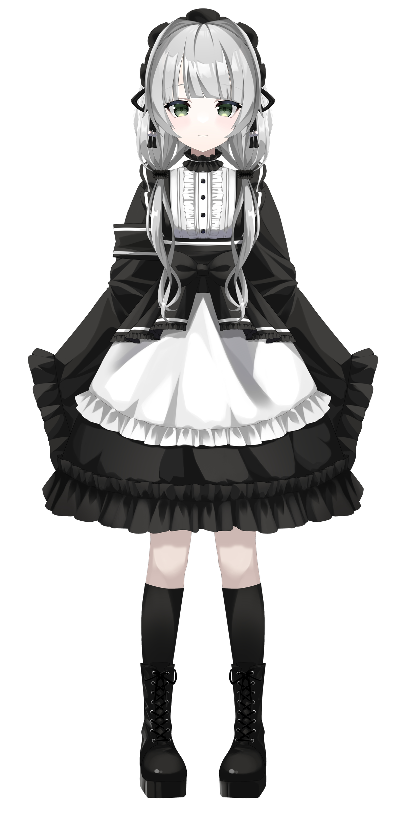
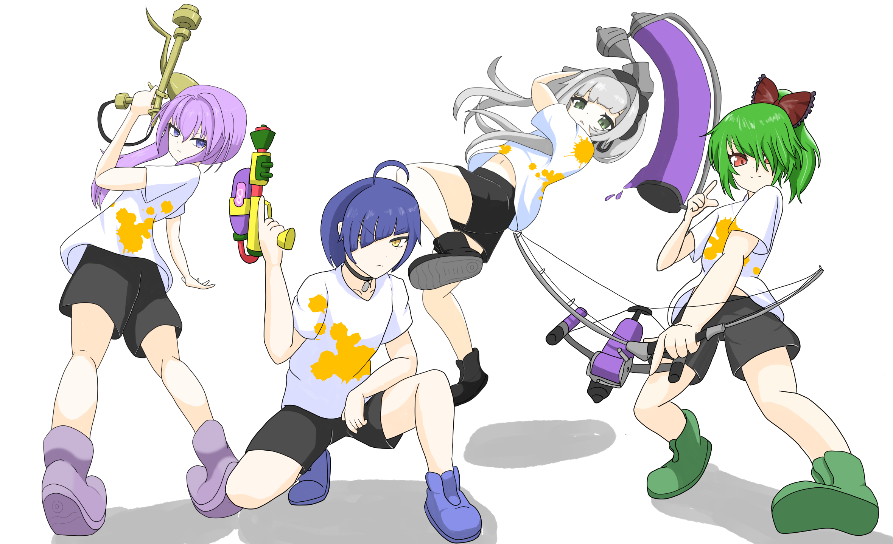
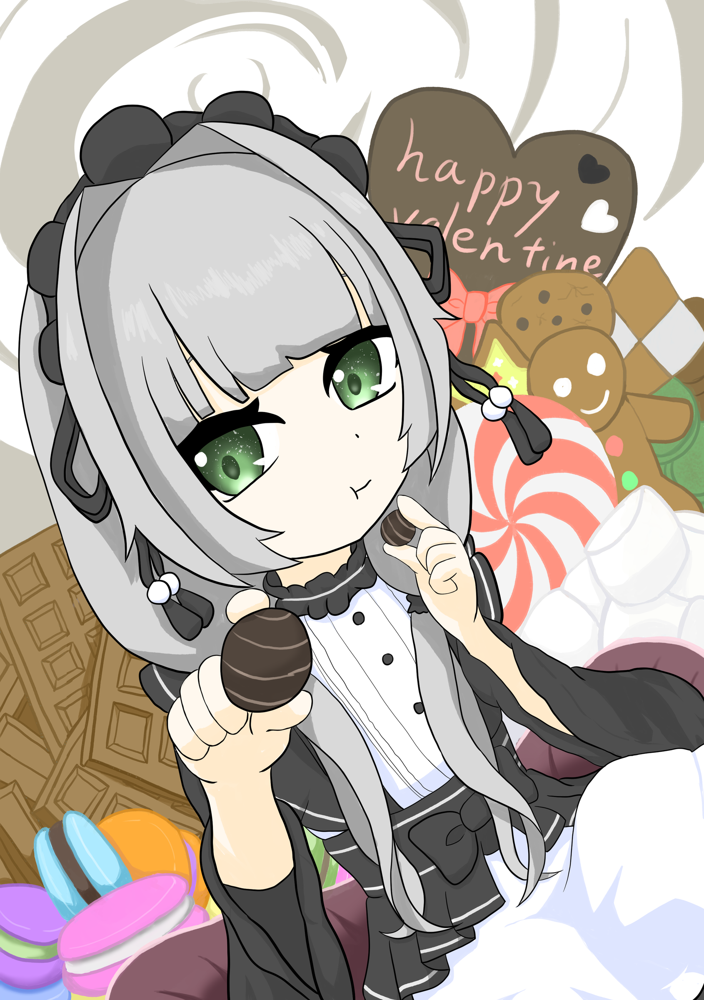
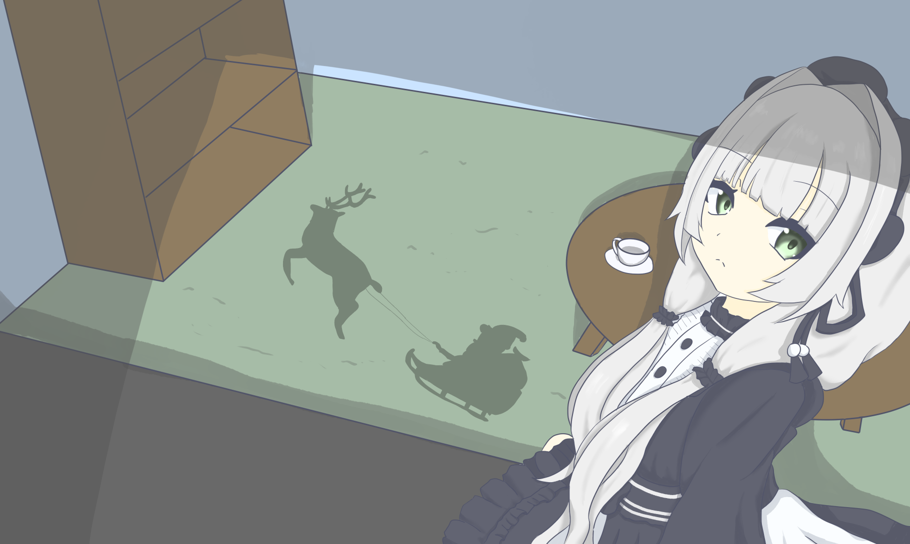

CREATIVE
お絵描き・創作
イラスト制作や練習など、静かな作業時間をご一緒に。
WELCOME TO MY LITTLE WORLD
こむらさきるとら ／ おしるこ
夜に寄り添う、のんびりアトリエ。
お絵描きとチルゲームを中心に、
ゆったりした時間をお届けするVTuberです。

01 — PROFILE
はじめましての方も、いつも来てくれる方も。
ABOUT ME
お絵描きやチルゲームを中心に活動しているVTuber。 作業のおともにも、ひと休みしたい時間にも、 ふらっと立ち寄れる場所を目指しています。
02 — STREAM
作業のおともに、のんびり過ごしませんか。
CREATIVE
イラスト制作や練習など、静かな作業時間をご一緒に。
CHILL & BUILD
マイクラなどの建築や探索、作業系ゲームでゆったり遊ぶ時間。
STORY & READING
物語を読み進めながら、世界観や登場人物を一緒に楽しむ時間。
TOGETHER
コラボや参加型企画で、誰かと過ごす楽しい時間。
03 — GALLERY
お気に入りの作品や活動の記録を並べる場所。

スプラトゥーン コラボメンバー

2026年 バレンタイン

2025年 クリスマス
04 — LINKS
最新のお知らせや配信は、こちらから。